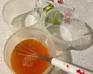
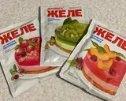
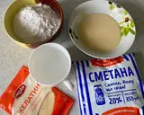
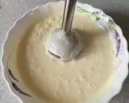
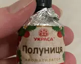
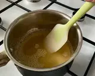
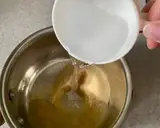
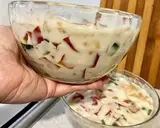
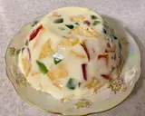
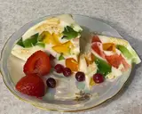

Торт "Бите скло"
Інструкція з приготування
Кольорове, фруктове желе, приготуйте заздалегідь. Пакетик висипати в ємність і залити окропом. Швидко перемішати віночком до розчинення. Теж саме зробити з іншими пакетиками. Додатково я додала по 2 чайні ложечки цукру в кожну ємність із желе. Поставити у холодильник до повного застигання.
Застигле желе нарізати невеликими шматочками. Печиво краще поламати.
- Підготувати інгредієнти: Сметану, згущене молоко,цукрову пудру,желатин і 150 мл води кімнатної температури. 
- У глибокому посуді з'єднати сметану, згущене молоко, цукрову пудру і змішати до однорідної консистенції за допомогою
занурювального блендера. Можна додати ароматизатор (у мене полуничний), але не більше 10 крапель. Перемішати. 
- У металевий ковшок висипати желатин і залити 150 мл водою кімнатної температури.
Помішувати віночком до розчинення желатину. Не доводити до кипіння! 
- Не гарячий желатин влити тонким струмком у сметанну масу, при постійному помішуванні.

- Вийде рідка маса.
- В глубокую ёмкость выложить нарезанное цветное желе и печенье. Залить белой сметанной смесью и перемешать. Верхнюю поверхность выровнять.
- Я розлила в два посудини, щоб швидше застиг і менше місця зайняв у холодильнику. Ставимо в холодильник на 2:00 30 хвилин. 
- Щоб викласти тортик зі скляної ємності, її треба помістити в гарячу воду на пару хвилин, накрити тарілкою і перевернути догори дном. 
- Тортик добре нарізається ножем.
- При подачі можна прикрасити свіжими або мороженими ягодами. Тортик дуже ніжний та смачний! Приємного апетиту! 